Other-Works gathers photographs that exist outside the main bodies of work. These images include portraits, studies of light and experimentation. The photographs stand independently, documenting moments that did not belong to a larger series but remain visually and conceptually significant.
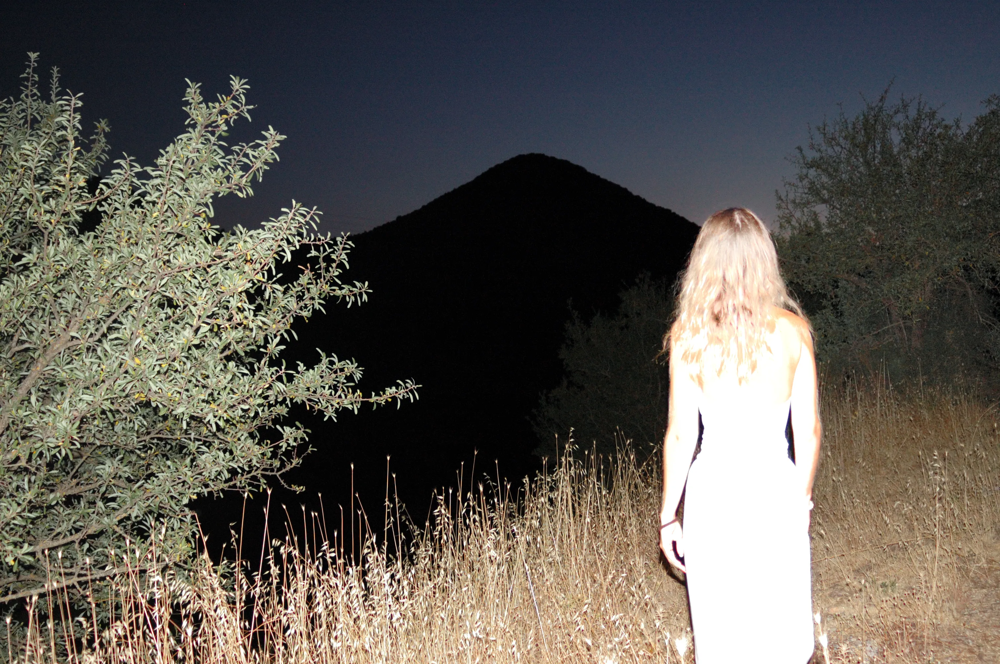
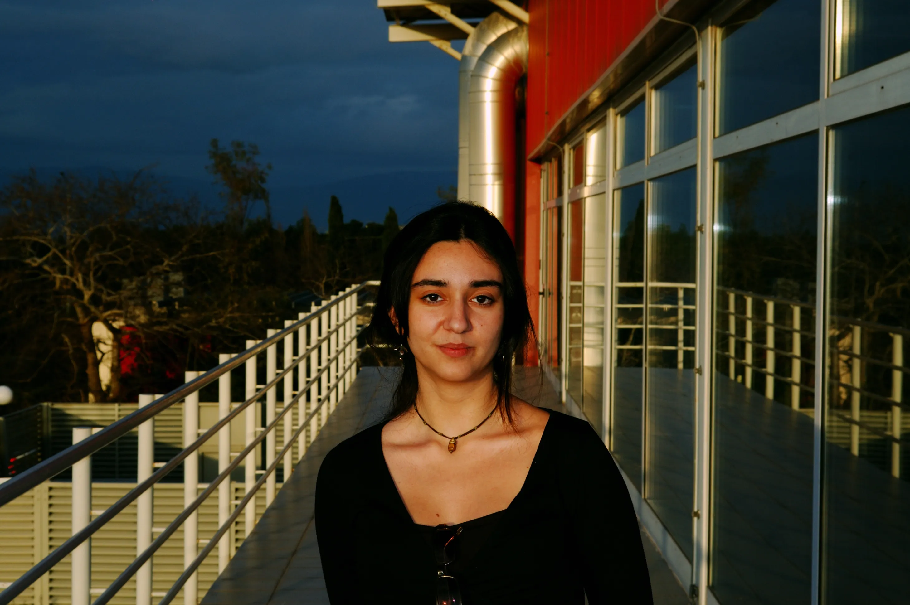
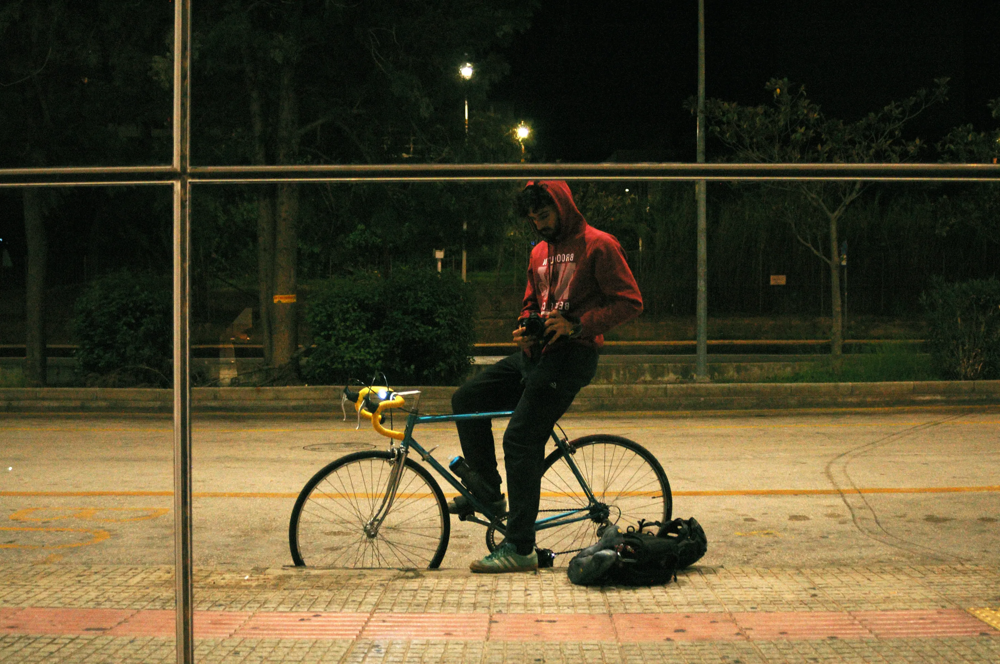
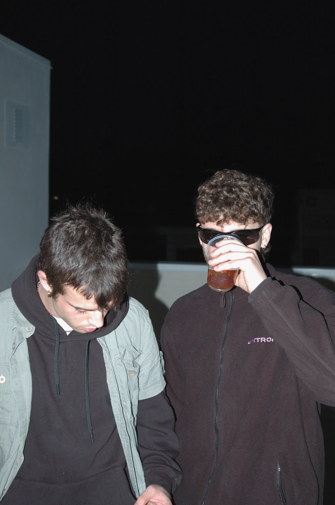
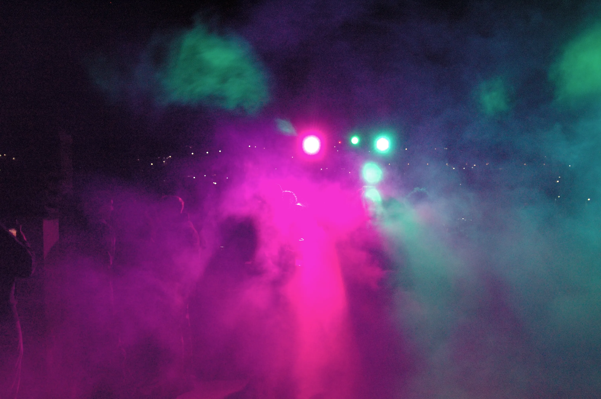
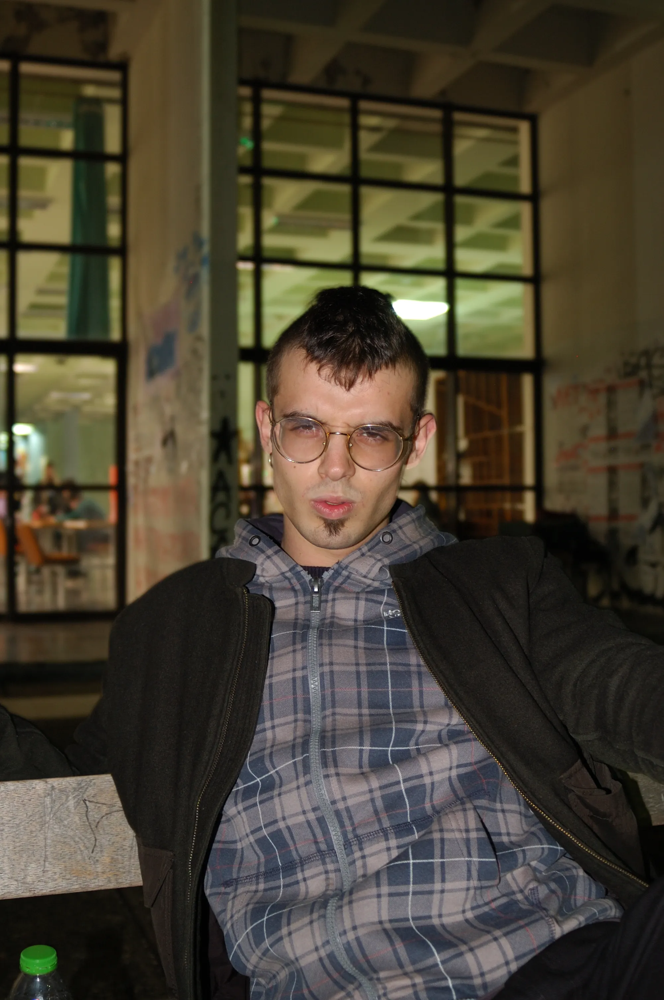
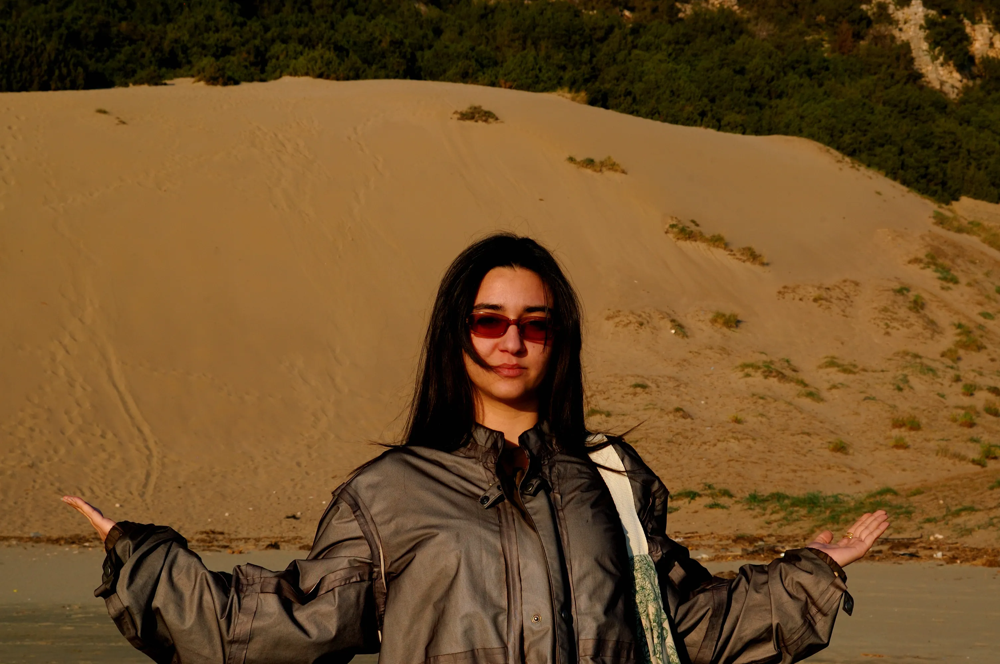
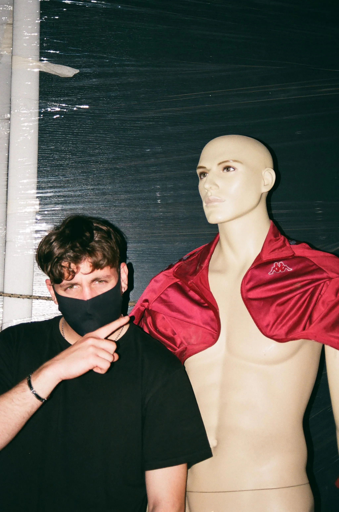
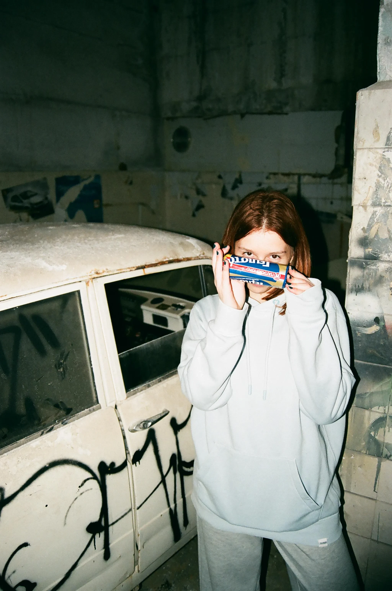
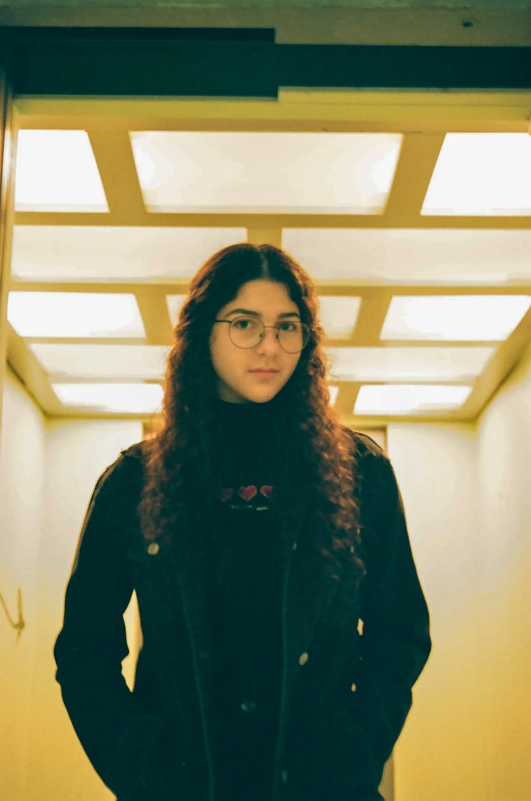
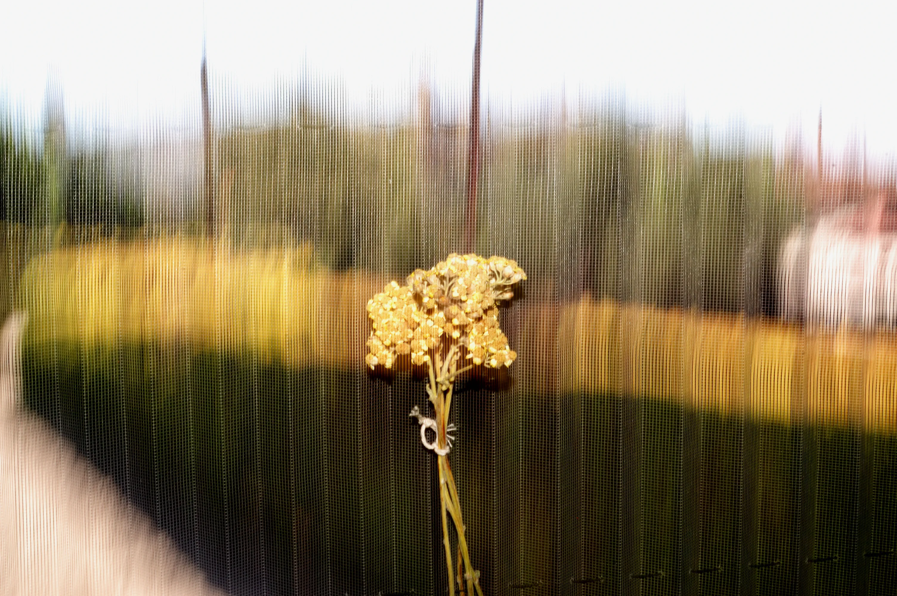
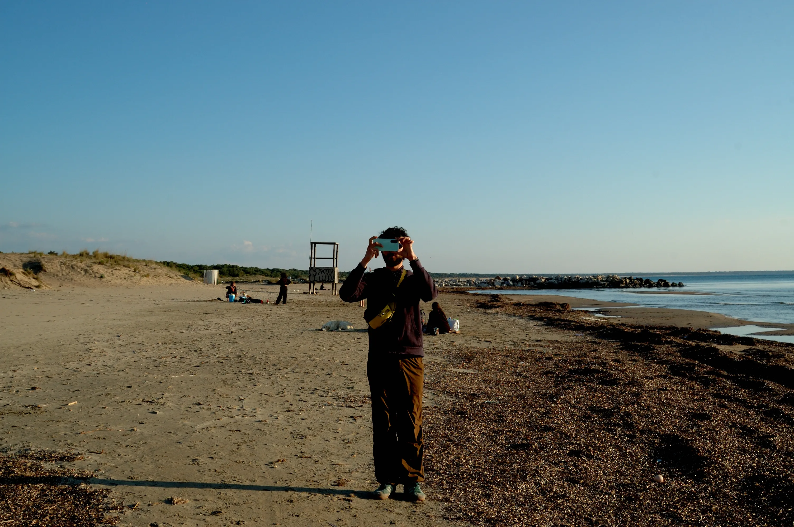
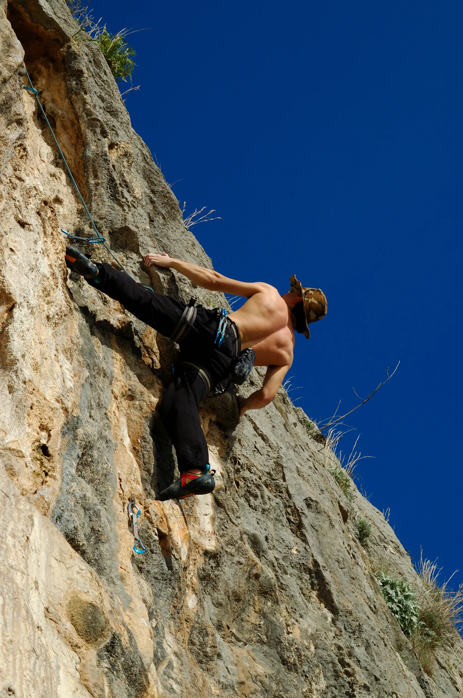
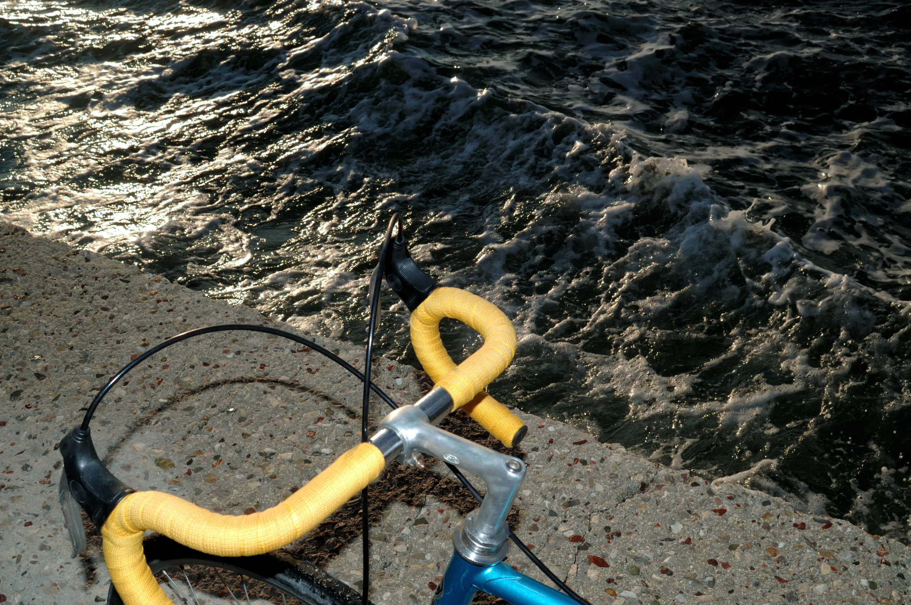
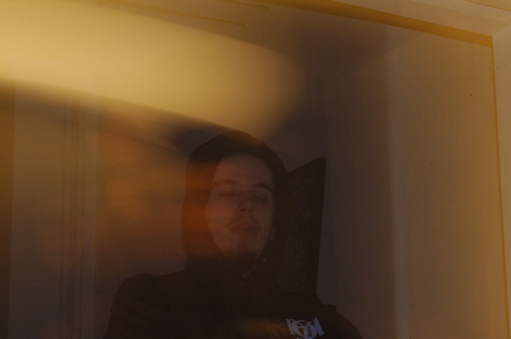